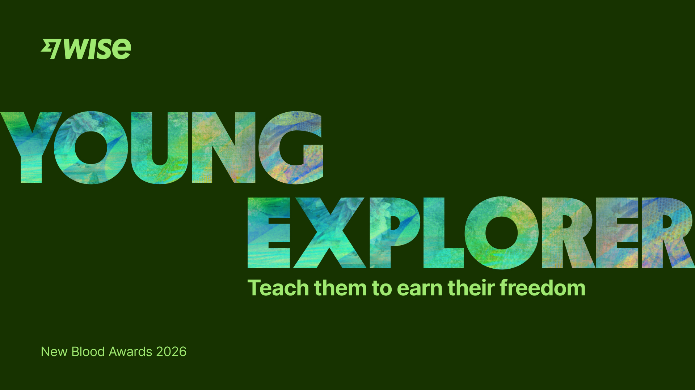
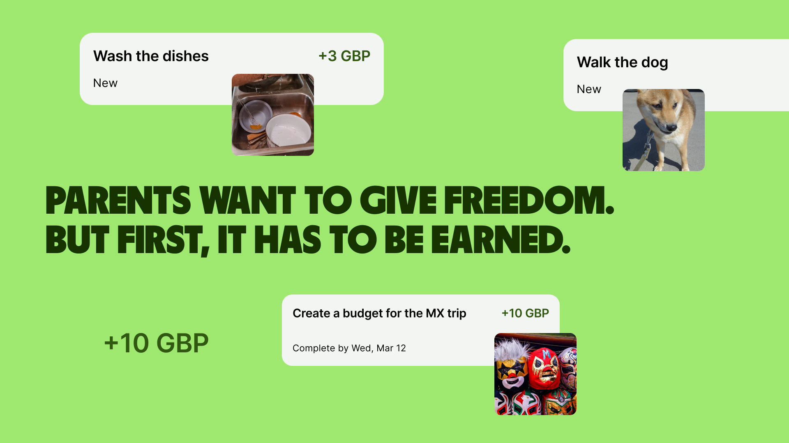
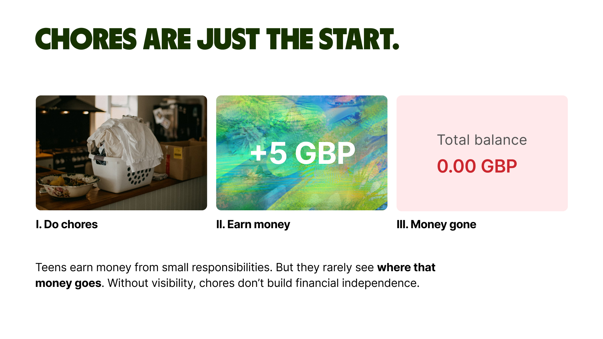
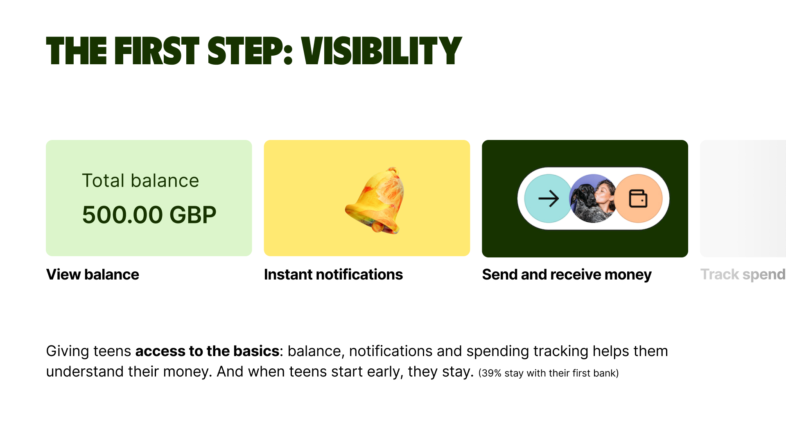
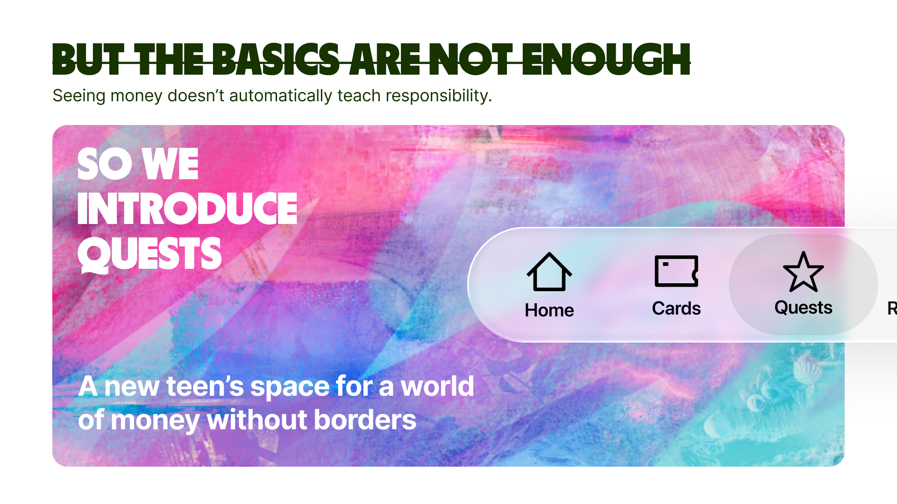
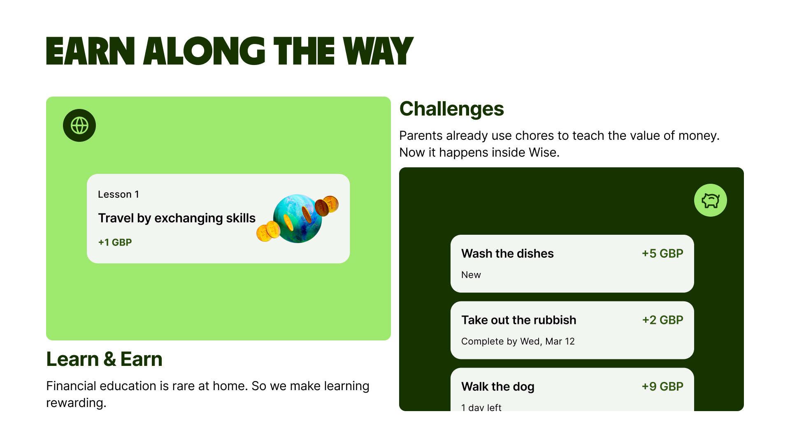
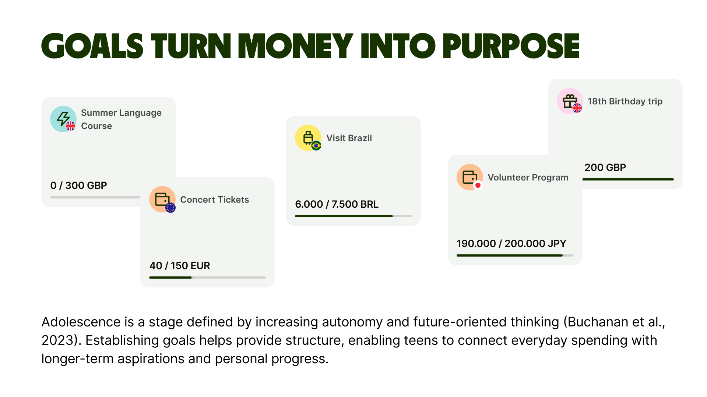
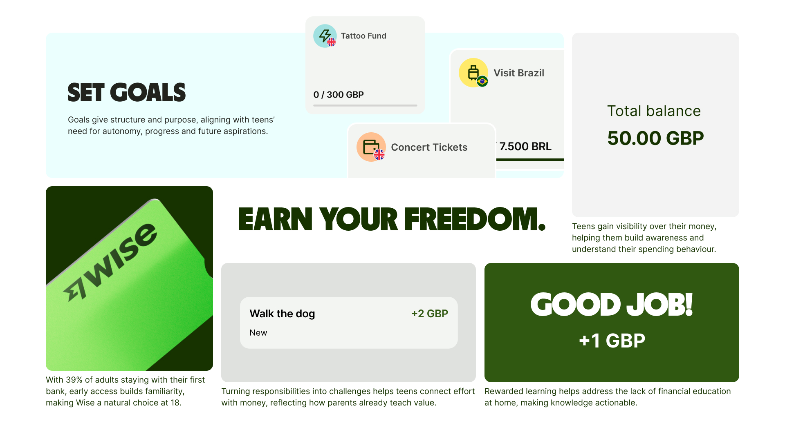

Wise / New Blood Awards 2026
Wise Quests
Turning financial freedom into a guided learning journey.
A product concept for Wise Young Explorer that helps parents give teenagers more financial autonomy through visibility, challenges and goal-based saving, balancing parental reassurance with teen motivation.
View the visual story
01 / Challenge
Parents want to give freedom. But first, it has to feel safe.
Wise Young Explorer helps teenagers save, spend and receive money across currencies while parents retain oversight and control. The challenge was to design an experience that feels reassuring for parents but still simple, useful and motivating for teens.

02 / Core insight
Autonomy needs visibility before it can become trust.

Parents want safety and responsibility, while teenagers want freedom and independence. The solution needed to work for both audiences without directly marketing to minors or creating a separate brand.
03 / Design decision
The first step is visibility.
Visibility gives teens access to basic money awareness through balance, notifications and spending tracking. These foundations help teens understand money in context while giving parents confidence to grant more independence.

04 / Solution
Quests turn everyday responsibility into guided progress.

Together with the team, we structured the concept around three pillars: Visibility, Challenges and Goals. Each pillar connects short-term actions with long-term financial confidence.
05 / Product pillars
Earn, learn and grow.
Challenges
Parents create paid tasks and teens complete them, turning everyday responsibilities into moments of progress.
Learn and Earn
Short financial lessons reward learning, making financial education actionable instead of abstract.
Goals
Teens set goals, track progress and connect daily spending with longer-term aspirations.
06 / Visual story
Eight presentation image slots



07 / My role
Connecting research, product logic and storytelling.
What I contributed
My contribution focused on research, interviews, insight synthesis, ideation, wireframes and case narrative.
What the concept solves
The solution reframes teen banking from a simple card experience into a guided journey where teens earn through responsibilities, learn through rewards and save towards goals.